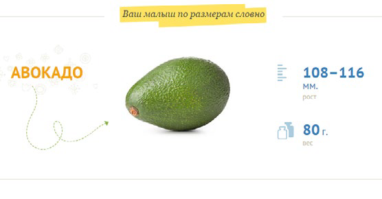
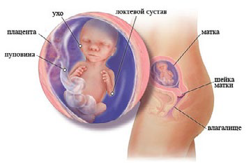

16 неделя беременности

У некоторых женщин в это время происходит самое долгожданное событие – движение малыша. Первые шевеления плода на 16 неделе беременности вполне могут ощущаться: часто женщина даже не осознает, что это именно они.
Толчки малыша могут напоминать лёгкие движения, будто бабочки внутри вас запорхали тонкими крылышками.
На этот момент тело матки уже выступает за лонное сочленение и его можно прощупать через брюшную стенку. Ребенок совершает активные движения, они становятся все более скоординированными. Ребенок уже научился держать головку прямо, а его ножки уже полностью сформированы. Ушные раковины еще продолжают свое формирование.
Малыш совершает глотательные движения, умеет сосать, может потягиваться и поворачивать голову, зевать, корчить гримасы, плеваться и даже пукать.
Он уже без проблем может сжимать кулачки, играть своими ручками и ножками. Пуповина очень прочная, гибкая и эластичная, она может выдержать нагрузку весом до 5-6 килограмм. В 16 недель ее длина 40-50 сантиметров, а диаметр – 2 сантиметра.
Живот беременной уже очень заметен.
На 16 неделе беременности начинает работать гипофиз.
Управление организмом нервной системой становится все заметнее. Нервные клетки (нейроны), начавшие свое формирование еще на 5 неделе, активно набирают свой рост и за каждую секунду их прибавляется по 5000.
У девочек на этой стадии развития яичники опускаются в область малого таза. Дыхательная система ребенка еще не совершенна и не работает. Пока малыш осуществляет дыхание через плаценту. Дыхания, как такового, пока нет. Легкие же развернутся только после рождения (после крика).
К функциям печени, помимо кроветворения, прибавляется и функция пищеварения. В крови же ребенка присутствуют все необходимые клетки (лимфоциты, эритроциты и моноциты). Эритроциты пока состоят из фетального гемоглобина.
ФЕТАЛЬНЫЙ ГЕМОГЛОБИН – это гемоглобин новорожденных, который отличается от обычного гемоглобина не только своим строением, но и свойствами. При рождении в крови ребенка имеется до 80% фетального гемоглобина. Примерно к двенадцати месяцам данный вид гемоглобина ребенка претерпевает целый ряд изменений, при этом его заменяет нормальный гемоглобин, который отмечается у взрослых людей. Стоит обратить Ваше внимание на то, что фетальный гемоглобин у ребенка – это норма.
Ваш малыш реагирует на голоса родных и близких, звуки и слышит музыку.
Хотя плод еще очень мал, его сердечко перекачивает примерно 28,5 литров крови в сутки.
Внутриутробное развитие плода на 16 неделе беременности
ВАШ ОРГАНИЗМ
Вы можете испывать ощущение движения у вас в животе, и оно наступает чаще на более ранних сроках беременности, если это ваш второй или третий ребенок.
Не волнуйтесь, если вы пока не чувствуете никаких движений, поскольку может пройти еще несколько недель, прежде чем вы почувствуете первые толчки маленькой ножкой. Если вы ожидаете двойняшек, будьте готовые к большому количеству движений у себя в животе.
Ваша грудь продолжает увеличиваться в размере, и, скорее всего, возрастает и ваш аппетит. Средняя прибавка веса у большинства женщин составляет примерно 2,5-4,5 кг, однако фактическая величина может меняться в зависимости от вашего веса до беременности. Если вы носите двойню, прибавка в весе будет больше, и она должна отвечать контрольному весу, который ваш врач рассчитал в качестве приемлемого для вас на данной стадии.
Из-за увеличения объема вашей крови у вас изредка может течь из носа кровь (в небольшом количестве) или вы можете временами страдать заложенностью носа.
Причиной этому являются отеки слизистой оболочки носа, и это нормальное явление.
Матка растет и начинает давить на кишечник, поэтому могут возникать проблемы с желудочно-кишечным трактом: изжога, расстройства пищеварения, запоры и вздутие. Употребляйте в большом количестве клетчатку для предупреждения запоров.
ЗДОРОВЫЕ СОВЕТЫ
Женщине следует использовать просторную и не стесняющую одежду и специальное белье для беременных, отказаться от каблуков – для сохранения здоровья своих вен.
Не следует употреблять блюда из сырой рыбы (суши), так как здесь могут находиться возбудители паразитных заболеваний. Тоже самое относится и не к прожаренному мясу, сырым яйцам и некипяченому молоку.
Спать рекомендуется на боку, так как в положении на спине матка может давить на крупные кровеносные сосуды, что может нарушить поступление крови к малышу.
Сейчас удобное время для вас с партнером делать совместные покупки в супермаркете и затем совместно же готовить, так чтобы вы вдвоем могли оценить достоинства здоровой пищи. Если у вас есть еще дети, то сейчас подходящее время, чтобы поговорить с ними о будущем братике или сестричке.
15 неделя 17 неделя